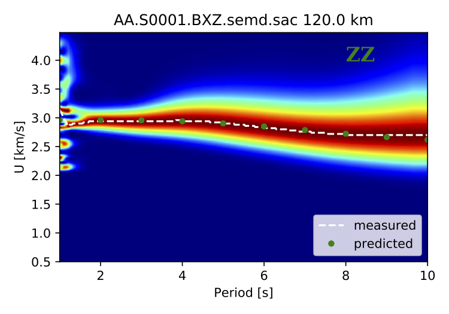

Applications¶
To fulfill the strong need at user’s end for applications based on ambient noise, NoisePy provides two application scripts for further surface wave dispersion analysis and seismic monitoring through measuring velocity change with time.
I. Group velocity measurements¶
The script of I_group_velocity.py is to estimate the group velocity using wavelet transform. The general idea is to apply narrow bandpass filters to the waveform and track the energy peak in each narrow frequency bands at multiple frequencies. The image below shows our synthetic test by cross-comparing the predicted dispersion curves using the wave propagation matrix method from CPS (Hermann et al., 2012) and those measured using our script upon a synthetic waveform from SPECFEM2D.
{kind=link}
II. Monitoring velocity changes¶
The script of II_measure_dvv.py combines several general and popular methods for dv/v measurement including waveform stretching (Sens-Schönfelder and Wegler, 2006), dynamic time warping (Mikesell et al., 2015), moving-window cross spectrum (Clark et al., 2011), and the two newly developed methods in wavelet domain including 1) wavelet cross-spectrum (wcs; Mao et al., 2018) and wavelet stretching (Yuan et al., in prep).